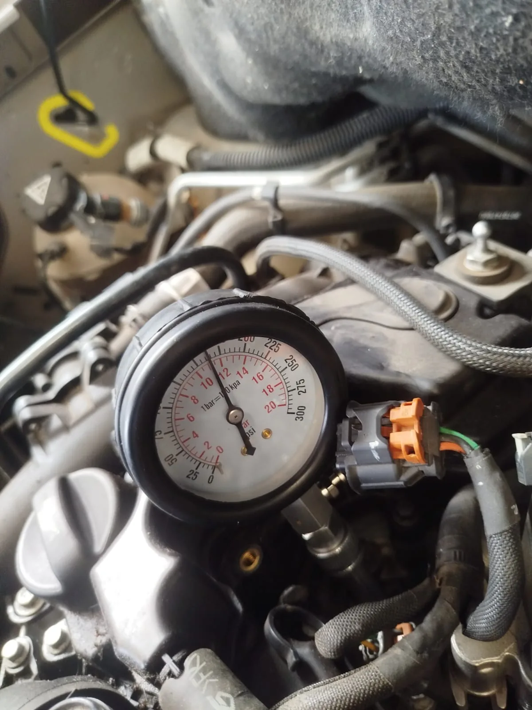
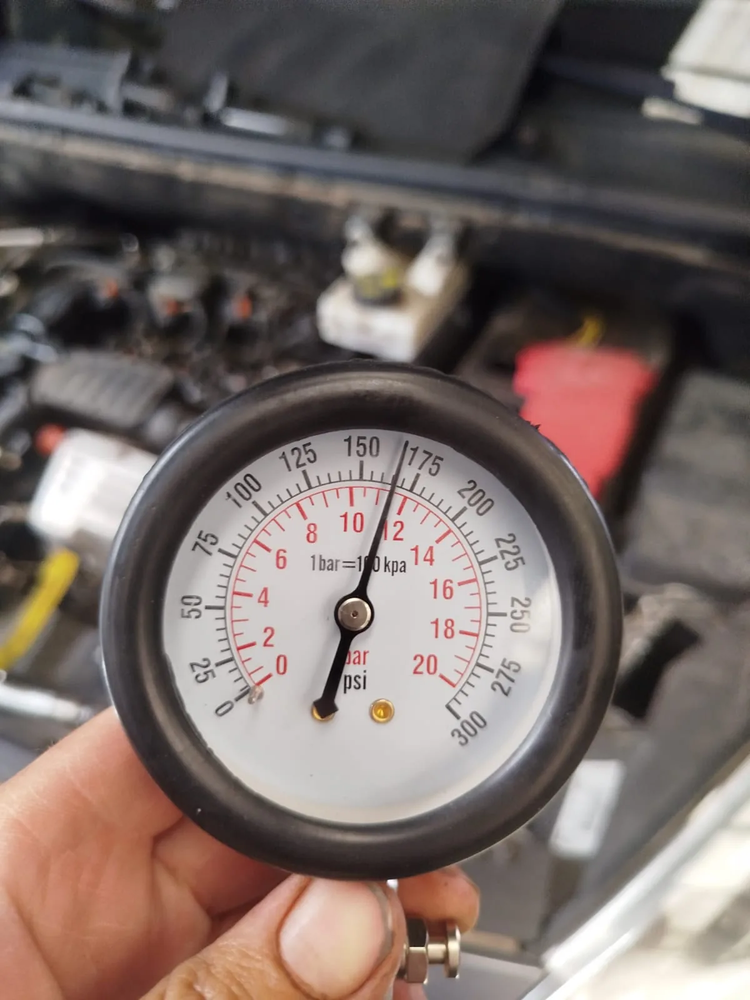
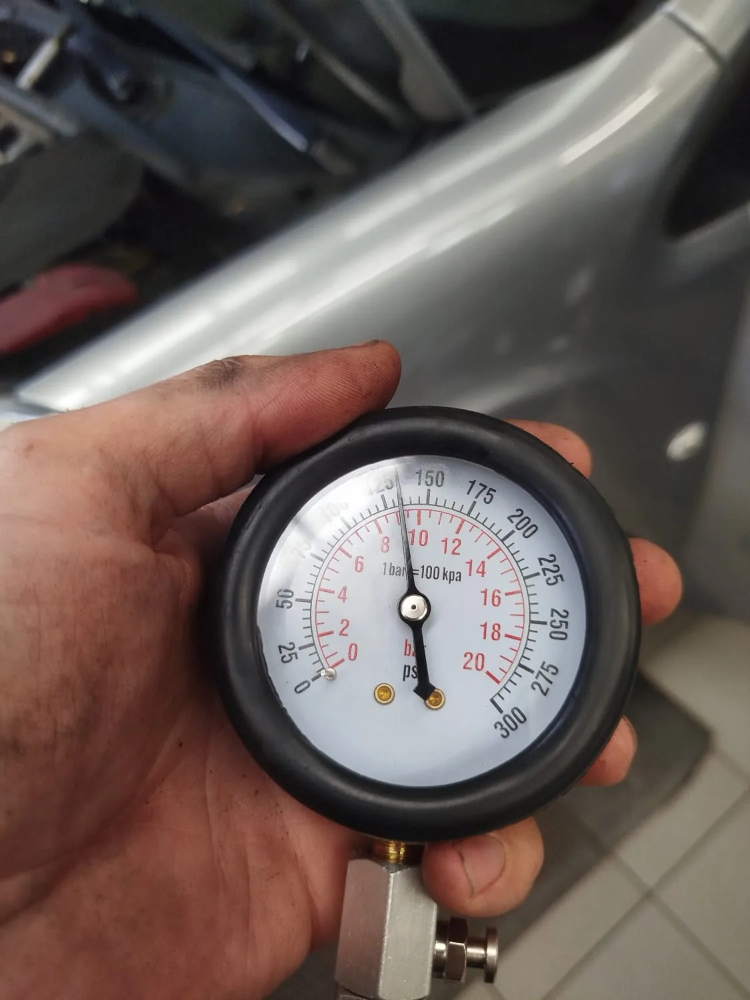

Olieverbruik bij een PureTech-motor
Een Peugeot Partner 1.2 PureTech kwam bij Garage Peter binnen met duidelijk olieverbruik.
Compressietest vóór de behandeling
Eerst werden de cilinders gemeten. De compressiewaarden bleken lager en ongelijkmatig.
Motorontkalking en nieuwe meting
Na een motorontkalkingsbehandeling van ongeveer tweeënhalf uur werd opnieuw een compressietest uitgevoerd. De waarden waren merkbaar hoger en gelijkmatiger.
Geen garantie op herstel van mechanische schade
Ontkalking kan in sommige gevallen helpen bij vervuiling, maar is geen oplossing voor iedere vorm van slijtage of mechanische motorschade.
Foto's van de Peugeot Partner en de compressietest
Originele werkplaatsfoto's van Garage Peter. De compressiemeter werd tijdens de diagnose op verschillende momenten gefotografeerd. De afzonderlijke beelden zijn niet gelabeld als vóór of na, omdat de exacte meetvolgorde niet uit de foto's alleen blijkt.







